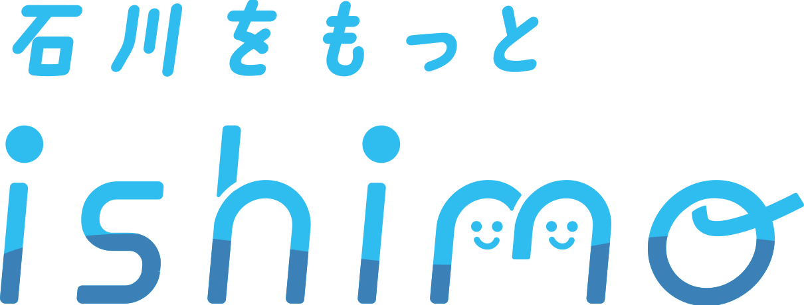

×COLLABORATION
学生プロジェクト
ishimo（イシモ）と連携します。
2026年9月20日の泥ん子運動会に向け、石川県主催・北國新聞社特別協力の学生プロジェクト「ishimo」と連携します。学生への情報発信や参加の呼びかけを通じて、能登と学生がつながる入口を一緒につくります。
今回の連携を、学生が継続して能登に関われる仕組みへつなげることを目指します。
ishimo公式サイトを見る ↗2026.9.20SUZU / ISHIKAWA
9月20日、珠洲市若山町洲巻で「泥ん子運動会」を開催。子どもも大人も、約1,000㎡の田んぼで思いきり遊びます。


×COLLABORATION
2026年9月20日の泥ん子運動会に向け、石川県主催・北國新聞社特別協力の学生プロジェクト「ishimo」と連携します。学生への情報発信や参加の呼びかけを通じて、能登と学生がつながる入口を一緒につくります。
今回の連携を、学生が継続して能登に関われる仕組みへつなげることを目指します。
ishimo公式サイトを見る ↗この場所でつくる一日SEE THE PLACE
9月20日に実際に使う田んぼが正式に決まりました。珠洲市若山町洲巻の約1,000㎡の農地で、みんなで思いきり楽しめる一日にします。


OUR THOUGHTS / 私たちの思い
私たちがつくりたいのは、9月20日の楽しい一日だけではありません。使われなくなった農地にもう一度人が集まり、笑い声が生まれ、そこから次の関わりが始まること。その小さなきっかけを、珠洲市若山町洲巻からつくりたいと考えています。
洲巻は、珠洲市若山町にある地域です。震災の影響などを経て住民が離れ、以前に比べて人の関わりが大きく減りました。私たちが現地を訪れたとき、そこには田畑や道、暮らしの痕跡が残っている一方で、日常的に人が行き交う姿はとても少なくなっていました。
「人が少ない」ということは、単に人口の数字が減ることだけではないと思っています。誰かと立ち話をすること、子どもの声が聞こえること、地域の外から友人が訪ねてくること、田畑に人の手が入り続けること。そうした一つひとつの小さな営みが減っていくと、その場所へ行く理由も、関わるきっかけも少しずつ失われていきます。
だから私たちは、最初から大きなことをしようとは考えませんでした。まずは、「この日に洲巻へ行ってみよう」と思える理由を一つつくること。それが泥ん子運動会です。田んぼに入って、子どもも大人も泥だらけになって、知らない人同士でも同じ競技で笑う。地域の課題を難しく語る前に、「楽しかった」「また来たい」と思える体験から関係が始まってもいいと考えています。
今回使わせていただくのは、約1,000㎡の田んぼです。この土地も、イベントの日だけの会場ではありません。使われなくなっていた農地を、これから再び農地として活用していく流れの中にあります。私たちは、農地を「遊び場に変える」のではなく、農地が再び使われていく過程に、人が出会う入口をつくりたいと思っています。
耕作放棄地の問題は、草を刈って土を整えれば終わるものではありません。その土地を使い続ける人がいること、応援する人がいること、地域外からも関心を持って訪れる人がいること。その関係が積み重なって初めて、土地がもう一度地域の中で役割を持てるのだと思います。
私たち自身も、最初から能登のことをすべて知っていたわけではありません。現地へ行き、土地を見て、人と話し、協力してくださる方に出会いながら、少しずつこの企画を形にしてきました。だからこそ、参加する人にも最初から大きな責任を求めたいわけではありません。「面白そうだから行ってみる」でもいい。「子どもに泥遊びをさせたい」でもいい。その一歩が、能登との新しいつながりになるかもしれないからです。
9月20日にたくさんの人が集まったとしても、それだけで洲巻の課題が解決するわけではありません。むしろ私たちにとって、その日がスタートです。そこで出会った地域の方、学生、家族、ボランティア、企業や団体とのつながりを残し、次の活動へつなげていく。一度きりのイベントではなく、「また洲巻へ行こう」と思う人を少しずつ増やしていくことを大切にします。
能登には、私たちだけでは動かせないことがたくさんあります。だからこそ、地域の方の知恵を借り、これまで能登で活動してきた方々とつながり、学生や若者が継続して関われる形を探していきます。誰か一人が頑張り続ける活動ではなく、人と人がつながることで続いていく活動にしたい。それがNOTO Re:Bloomの目指す姿です。
「咲かせる」のは、花だけではありません。使われなくなった土地にもう一度役割が生まれること。人の少なくなった場所に笑い声が戻ること。能登を知らなかった若者が、次は友人を連れて戻ってくること。そんな小さな変化を一つずつ増やしていくことを、私たちはRe:Bloomと呼びたいと思っています。9月20日、洲巻の田んぼで生まれる出会いが、その最初の一歩です。
参加前に知っておきたいことBEFORE YOU COME
会場農地は正式に決定しました。泥の中で思いきり遊べるよう、当日の服装・着替え・泥落としも準備を進めています。駐車やトイレなど、まだ最終確認中の情報は確定後に更新します。
石川県珠洲市若山町洲巻の田んぼです。Googleマップで見る ↗
田んぼの中では裸足で競技します。長靴は基本的に必要ありません。
水着は必須ではありません。汚れてよい服装で、水着の上にTシャツなどを着ると着替えやすいです。
競技後に着替えられる更衣スペースを設けます。着替えとタオルをご持参ください。
シャワー設備ではありませんが、水で体についた泥を落とす程度の洗い流しはできます。
田んぼ周辺に駐車スペースを設ける予定です。旧上黒丸小学校も候補として確認中です。
イベント当日は日曜で、上黒丸方面の若山飯田ルートは土日運休です。現時点では車での来場をおすすめします。
現在、利用できるトイレの確保方法を調整しています。決まり次第このサイトで案内します。
駐車位置や会場への入り方など、最終的な案内は確定後に参加者へお知らせします。
※2026年9月6日時点の情報です。会場農地は確定済みです。調整中の内容は確定後に随時更新します。
能登の農地のこと、泥ん子運動会を行う理由、私たちが目指していることをご紹介します。
土地と企画を知る →03 / PARTNER活動を支えてくださる企業・団体の皆さまと、現在の協力内容をご紹介しています。
協賛・協力を見る →クラウドファンディング終了のご報告THANK YOU FOR YOUR SUPPORT
2026年8月15日に終了し、10名の方から合計186,000円のご支援をいただきました。
ご支援を9月20日の開催につなげます。結果・活動報告はREADYFORで引き続きご覧いただけます。
クラウドファンディングでいただいたご支援の総額です。
プロジェクトを支援してくださった皆さまの人数です。
これまでと、これからOUR JOURNEY
現地で話を聞き、土地を探して形にしてきた歩みを、来年度以降の継続へつなげます。
能登の課題と向き合い、使われなくなった農地に目を向けました。
能登へ足を運び、土地の状態や地域の状況を実際に確認しました。
農家さんや地域の方と相談しながら、条件に合う土地を探しました。
約1,000㎡の田んぼをお借りし、9月20日に使用する農地が正式に決まりました。会場地図 ↗
10名の方からご支援をいただき、クラウドファンディングを終了しました。
15:00〜17:00、コワーキングスクエア金沢香林坊で、これまでの活動と翌日の泥ん子運動会について発表します。
約1,000㎡の田んぼで、子どもも大人も一緒に泥だらけになって遊ぶ一日を迎えます。
実施後の記録と地域・学生とのつながりを引き継ぎ、来年度以降も続く活動として育てていきます。

WHO WE ARESTUDENT TEAM
土地をお借りする相談から、競技、安全面、協賛、参加募集まで、学生メンバーで一つずつ準備しています。
参加費無料。受付12:30、13:00開始です。